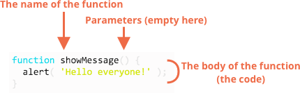

JavaScript Fundamentals
From The Modern Javascript Tutorial Part 1: The JavaScript Language
1. Hello, world!
- We can use a
<script>tag to add JavaScript code to a page. - The type and language attributes are not required.
- A script in an external file can be inserted with
<script src="path/to/script.js"></script>. - If src is set, the script content is ignored.
2. Code structure
- We recommend putting semicolons between statements even if they are separated by newlines.
- One-line comments start with
//. - Multiline comments start with
/*and end with*/.
3. The modern mode, “use strict”
… until 2009 when ECMAScript 5 (ES5) appeared. It added new features to the language and modified some of the existing ones. To keep the old code working, most modifications are off by default. You need to explicitly enable them with a special directive: "use strict".
"use strict";
// this code works the modern way
...
Only comments may appear above "use strict".
Once we enter strict mode, there’s no return.
- The
"use strict"directive switches the engine to the “modern” mode, changing the behavior of some built-in features. - Strict mode is enabled by placing
"use strict"at the top of a script or function. Several language features, like “classes” and “modules”, enable strict mode automatically. - Strict mode is supported by all modern browsers.
- We recommended always starting scripts with
"use strict". All examples in this tutorial assume strict mode unless (very rarely) specified otherwise.
4. Variables
A variable is a “named storage” for data.
let message; // declares or defines a variable
message = 'Hello'; // store the string
In older scripts, you may also find another keyword: var instead of let.
The code must be in strict mode to use let in Chrome (V8).
There are two limitations on variable names in JavaScript:
- The name must contain only letters, digits, or the symbols
$and_. - The first character must not be a digit.
When the name contains multiple words, camelCase is commonly used.
// note: no "use strict" in this example
num = 5;
// the variable "num" is created if it didn't exist
// This is a bad practice and would cause an error in strict mode
Constants
To declare a constant (unchanging) variable, use const instead of let.
Capital-named constants are only used as aliases for “hard-coded” values.
An extra variable is good, not evil. Modern JavaScript minifiers and browsers optimize code well enough, so it won’t create performance issues. Using different variables for different values can even help the engine optimize your code.
5. Data types
There are seven basic data types in JavaScript.
A number
The number type represents both integer and floating point numbers.
- Besides regular numbers, there are so-called “special numeric values” which also belong to this data type:
Infinity,-InfinityandNaN. NaNrepresents a computational error. It is a result of an incorrect or an undefined mathematical operation, for instance:"not a number" / 2 = NaN.NaNis sticky, any further operation onNaNreturnsNaN.
Doing maths is “safe” in JavaScript. We can do anything: divide by zero, treat non-numeric strings as numbers, etc. The script will never stop with a fatal error. At worst, we’ll get
NaNas the result.
A string
In JavaScript, there are 3 types of quotes.
- Double quotes:
"Hello". - Single quotes:
'Hello'. - Backticks:
`Hello`.
Backticks are “extended functionality” quotes. They allow us to embed variables and expressions into a string by wrapping them in ${…}, for example:
let name = "John";
// embed a variable
alert( `Hello, ${name}!` ); // Hello, John!
// embed an expression
alert( `the result is ${1 + 2}` ); // the result is 3
A boolean
The boolean type has only two values: true and false.
The “null” value
The special null value does not belong to any of the types described above.
It forms a separate type of its own which contains only the null value.
The “undefined” value
The special value undefined also stands apart. It makes a type of its own, just like null.
The meaning of undefined is “value is not assigned”.
If a variable is declared, but not assigned, then its value is undefined.
Technically, it is possible to assign undefined to any variable. But we don’t recommend doing that. Normally, we use null to assign an “empty” or “unknown” value to a variable, and we use undefined for checks like seeing if a variable has been assigned.
Objects and Symbols
The object type is special.
All other types are called “primitive” because their values can contain only a single thing (be it a string or a number or whatever). In contrast, objects are used to store collections of data and more complex entities.
The symbol type is used to create unique identifiers for objects.
The typeof operator
It supports two forms of syntax:
- As an operator:
typeof x. - As a function:
typeof(x).
The call to typeof x returns a string with the type name:
typeof undefined // "undefined"
typeof 0 // "number"
typeof true // "boolean"
typeof "foo" // "string"
typeof Symbol("id") // "symbol"
typeof Math // "object": a built-in object
typeof null // "object": that’s wrong, it is an officially recognized error in typeof, kept for compatibility
typeof alert // "function": functions belong to the object type, but typeof treats them differently
6 Type Conversions
ToString
We can call the String(value) function to convert a value to a string.
String conversion is mostly obvious. A false becomes “false”, null becomes “null”, etc.
ToNumber
Numeric conversion happens in mathematical functions and expressions automatically.
For example, when division / is applied to non-numbers:
alert( "6" / "2" ); // 3, strings are converted to numbers
We can use the Number(value) function to explicitly convert a value to a number.
If the string is not a valid number, the result of such a conversion is NaN. For instance:
let age = Number("an arbitrary string instead of a number");
alert(age); // NaN, conversion failed
Numeric conversion rules:
| Value | Becomes… |
|---|---|
undefined |
NaN |
null |
0 |
true and false |
1 and 0 |
| string | Whitespaces from the start and end are removed. If the remaining string is empty, the result is 0. Otherwise, the number is “read” from the string. An error gives NaN |
Please note that null and undefined behave differently here: null becomes zero while undefined becomes NaN.
Almost all mathematical operations convert values to numbers. A notable exception is addition +. If one of the added values is a string, the other one is also converted to a string.
ToBoolean
The conversion rule:
- Values that are intuitively “empty”, like
0, an empty string,null,undefined, andNaN, becomefalse. - Other values become
true.
Please note: the string with zero “0” is true:
alert( Boolean("0") ); // true
alert( Boolean(" ") ); // spaces, also true (any non-empty string is true)
Task
"" + 1 + 0 = "10"
"" - 1 + 0 = -1
true + false = 1
6 / "3" = 2
"2" * "3" = 6
4 + 5 + "px" = "9px"
"$" + 4 + 5 = "$45"
"4" - 2 = 2
"4px" - 2 = NaN
7 / 0 = Infinity
" -9 " + 5 = " -9 5"
" -9 " - 5 = -14
null + 1 = 1
undefined + 1 = NaN
7 Operators
String concatenation, binary +
alert( '1' + 2 ); // "12"
alert( 2 + '1' ); // "21"
alert( 2 + 2 + '1' ); // "41" and not "221"
Numeric conversion, unary +
The unary plus or, in other words, the plus operator + applied to a single value, doesn’t do anything to numbers. But if the operand is not a number, the unary plus converts it into a number.
It actually does the same thing as Number(...), but is shorter.
Assignment
The assignment operator
"="returns a value.
Increment/decrement
Increment/decrement can only be applied to variables. Trying to use it on a value like
5++will give an error.
Comma
The comma operator allows us to evaluate several expressions, dividing them with a comma ,. Each of them is evaluated but only the result of the last one is returned.
8 Comparisons
Like all other operators, a comparison returns a value. In this case, the value is a boolean.
String comparison
alert( 'Z' > 'A' ); // true
alert( 'a' > 'A' ); // true
alert( 'Bee' > 'Be' ); // true
Comparison of different types
When comparing values of different types, JavaScript converts the values to numbers.
let a = 0;
alert( Boolean(a) ); // false
let b = "0";
alert( Boolean(b) ); // true
alert(a == b); // true!
Strict equality
A regular equality check == has a problem. It cannot differentiate 0 from false, or from an empty string:
alert( 0 == false ); // true
alert( '' == false ); // true
A strict equality operator === checks the equality without type conversion.
Comparison with null and undefined
For a strict equality check ===, these values are different, because each of them is a different type.
For a non-strict check ==, there’s a special rule. These two are a “sweet couple”: they equal each other (in the sense of ==), but not any other value.
For maths and other comparisons < > <= >=, null/undefined are converted to numbers: null becomes 0, while undefined becomes NaN.
Strange result: null vs 0
alert( null > 0 ); // false: convert null to a number, treating it as 0
alert( null >= 0 ); // true
alert( null == 0 ); // false: undefined and null equal each other and don’t equal anything else
An incomparable undefined
alert( undefined > 0 ); // false: undefined gets converted to NaN
alert( undefined < 0 ); // false
alert( undefined == 0 ); // false
Evade problems:
- Just treat any comparison with
undefined/nullexcept the strict equality===with exceptional care. - Don’t use comparisons
>= > < <=with a variable which may benull/undefined, unless you’re really sure of what you’re doing. If a variable can have these values, check for them separately.
Summary
- Comparison operators return a boolean value.
- Strings are compared letter-by-letter in the “dictionary” order.
- When values of different types are compared, they get converted to numbers (with the exclusion of a strict equality check).
- The values
nullandundefinedequal==each other and do not equal any other value. - Be careful when using comparisons like
>or<with variables that can occasionally benull/undefined. Checking fornull/undefinedseparately is a good idea.
9 Interaction: alert, prompt, confirm
alert(message); shows a message. The call to alert returns undefined.
prompt(title, [default]); shows a message asking the user to input text. It returns the text or, if CANCEL or Esc is clicked, null.
confirm(question); shows a message and waits for the user to press “OK” or “CANCEL”. It returns true for OK and false for CANCEL/Esc.
All these methods are modal: they pause script execution and don’t allow the visitor to interact with the rest of the page until the window has been dismissed.
10 Conditional operators: if, ‘?'
11 Logical operators
There are three logical operators in JavaScript: || (OR), && (AND), ! (NOT).
Although they are called “logical”, they can be applied to values of any type, not only boolean. Their result can also be of any type.
|| (OR)
The OR || operator does the following:
- Evaluates operands from left to right.
- For each operand, converts it to boolean. If the result is
true, stops and returns the original value of that operand. - If all operands have been evaluated (i.e. all were false), returns the last operand.
&& (AND)
The AND && operator does the following:
- Evaluates operands from left to right.
- For each operand, converts it to a boolean. If the result is
false, stops and returns the original value of that operand. - If all operands have been evaluated (i.e. all were truthy), returns the last operand.
! (NOT)
The operator accepts a single argument and does the following:
- Converts the operand to boolean type:
true/false. - Returns the inverse value.
A double NOT !! is sometimes used for converting a value to boolean type, like built-in Boolean function.
12 Loops: while and for
while (condition) {
// code
// so-called "loop body"
}
Any expression or variable can be a loop condition, not just comparisons: the condition is evaluated and converted to a boolean by while.
do {
// loop body, execute at least once
} while (condition);
for (begin; condition; step) {
// loop body
}
for (let i = 0; i < 3; i++) {
alert(i); // 0, 1, 2
}
Here, the “counter” variable i is declared right in the loop. This is called an “inline” variable declaration. Such variables are visible only inside the loop.
Any part of for can be skipped:
let i = 0;
for (; i < 3;) {
alert( i++ );
}
We can force the exit at any time using the special break directive.
The continue directive stops the current iteration and forces the loop to start a new one.
Labels for break/continue
A label is an identifier with a colon before a loop:
labelName: for (...) {
// some code
break labelName;
}
labelName: // on a separate line
for (...) {
...
}
13 The “switch” statement
switch(x) {
case 'value1': // if (x === 'value1')
...
[break]
case 'value2': // if (x === 'value2')
...
[break]
default:
...
[break]
}
- The value of
xis checked for a strict equality to the value from the firstcase(that is,value1) then to the second (value2) and so on. - If the equality is found,
switchstarts to execute the code starting from the corresponding case, until the nearestbreak(or until the end ofswitch). - If no
caseis matched then thedefaultcode is executed (if it exists). - If there is no
breakthen the execution continues with the nextcasewithout any checks. - Any expression can be a
switch/caseargument. - Several variants of
casewhich share the same code can be grouped.
switch (a) {
// some code
case 3: // grouped code, side effect of without break
case 5:
alert('Wrong!');
alert("Why don't you take a math class?");
break;
// some code
}
14 Functions

Variables
- A variable declared inside a function is only visible inside that function.
- A function can access an outer variable as well.
- The function has full access to the outer variable. It can modify it as well.
- The outer variable is only used if there’s no local one. So an occasional modification may happen if we forget
let. - Variables declared outside of any function are called global.
Parameters
- The function can change the parameter, but the change is not seen outside, because a function always gets a copy of the value.
- If a parameter is not provided, then its value becomes
undefined.
Default values
function showMessage(from, text = "no text given") {
alert( from + ": " + text );
}
function showMessage(from, text = anotherFunction()) {
// anotherFunction() only executed if no text given
// its result becomes the value of text
}
In JavaScript, a default parameter is evaluated every time the function is called without the respective parameter. In the example above,
anotherFunction()is called every timeshowMessage()is called without thetextparameter. This is in contrast to some other languages like Python, where any default parameters are evaluated only once during the initial interpretation.
Returning a value
- A function with an empty
returnor without it returnsundefined. - Never add a newline between return and the value.
Naming a function
- Functions are actions. So their name is usually a verb.
- It is a widespread practice to start a function with a verbal prefix which vaguely describes the action.
- A function should do exactly what is suggested by its name, no more.
15 Function expressions and arrows
function sayHi() { // Function Declaration
alert( "Hello" );
}
let sayHi = function() { // Function Express
alert( "Hello" );
}; // note the semicolon!
alert( sayHi ); // shows the function code, does not run the function
let func = sayHi;
func(); // Hello
sayHi(); // Hello
Function expressions can have a name, like sum = function name(a, b), but that name is only visible inside that function.
Callback Function
function ask(question, yes, no) {
if (confirm(question)) yes()
else no();
}
function showOk() {
alert( "You agreed." );
}
function showCancel() {
alert( "You canceled the execution." );
}
// usage: functions showOk, showCancel are passed as arguments to ask
ask("Do you agree?", showOk, showCancel);
The arguments of ask are called callback functions or just callbacks.
function ask(question, yes, no) {
if (confirm(question)) yes()
else no();
}
ask(
"Do you agree?",
function() { alert("You agreed."); },
function() { alert("You canceled the execution."); }
);
Here, functions are declared right inside the ask(...) call. They have no name, and so are called anonymous.
Such code appears in our scripts very naturally, it’s in the spirit of JavaScript.
A function is a value representing an “action”.
Regular values like strings or numbers represent the data. A function can be perceived as an action. We can pass it between variables and run when we want.
Function Expression vs Function Declaration
- A Function Expression is created when the execution reaches it and is usable from then on. A Function Declaration is usable in the whole script/code block. As a result, a function declared as a Function Declaration can be called earlier than it is defined.
- When a Function Declaration is made within a code block, it is visible everywhere inside that block. But not outside of it.
Arrow functions
let func = (arg1, arg2, ...argN) => expression
let sum = (a, b) => { // the curly brace opens a multiline function
let result = a + b;
return result; // if we use curly braces, use return to get results
};
// without arguments
let sayHi = () => alert("Hello");
// with a single argument
let double = n => n * 2;
Summary
- Functions are values. They can be assigned, copied or declared in any place of the code.
- If the function is declared as a separate statement in the main code flow, that’s called a “Function Declaration”.
- If the function is created as a part of an expression, it’s called a “Function Expression”.
- Function Declarations are processed before the code block is executed. They are visible everywhere in the block.
- Function Expressions are created when the execution flow reaches them.